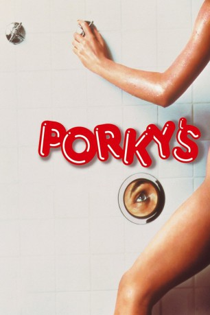

#5426 Porky's
 
 IMDB-Wertung: 6.2 / 10
IMDB-Wertung: 6.2 / 10  Metascore: 0
Metascore: 0 
Sie sind wild, sie sind cool und sie haben nur eine Sache im Kopf: Sex. Die sechs Nachwuchs-Casanovas der Angel Beach Highschool lassen einfach nichts unversucht, um jedes weibliche Wesen in die Federn zu bekommen. Leider spielen die Mädels nicht so mit, wie sich die Jungs das vorgestellt haben. Zum Glück gibt es das Porky's, den heißesten Striptease-Club der ganzen Stadt, wo selbst die wildesten Teenager-Träume wahr werden. Dort kommen die Sechs so richtig auf ihre Kosten, als sie jedoch vom Besitzer des Etablissements an die Luft gesetzt werden, gibt es nur eins: Rache - und die ist süßer als süß ...
Jahr: 1981
Dauer: 98 Minuten
FSK: 12
Land: Kanada Studio: 20th Century Fox of GermanyTonspuren:
Untertitel:
Auflösung: 1080p (1920x1040) Größe: 6850 MB
Genre: Komödie
Regisseur: Bob Clark
Drehbuch: Peter Greenaway
Soundtrack:
Darsteller:
- Dan Monahan als Pee Wee
- Cyril O'Reilly als Tim
 Kim Cattrall als Honeywell
Kim Cattrall als Honeywell- Scott Colomby als Brian Schwartz
- Boyd Gaines als Coach Brackett
 Doug McGrath als Coach Warren
Doug McGrath als Coach Warren- Susan Clark als Cherry Forever
 Art Hindle als Ted Jarvis
Art Hindle als Ted Jarvis- Alex Karras als Sheriff Wallace
 Eric Christmas als Mr. Carter
Eric Christmas als Mr. Carter Jack Mulcahy als Frank
Jack Mulcahy als Frank- Rod Ball als Steve
- Max Wasa als Cheerleader , uncredited
- Mark Herrier als Billy
- Wyatt Knight als Tommy
- Roger Wilson als Mickey
 Tony Ganios als Meat
Tony Ganios als Meat Kaki Hunter als Wendy
Kaki Hunter als Wendy- Nancy Parsons als Balbricker
- Wayne Maunder als Cavanaugh
- Chuck Mitchell als Porky
- Bill Hindman als Coach Goodenough
- John Henry Redwood als Conklin
- Julian Byrd als Cop no. 1
- Bill Fuller als Cop no. 2
- Will Knickerbocker als Bartender
- Bill Wohrman als Ted's Partner
- Roger Womack als Bouncer no. 2
- Gary Maas als Deputy no. 2
- Ilse Earl als Mrs. Morris
- Jill Whitlow als Mindy
- Pat Finn-Lee als Stripper
- Terry Guthrie als Miss Walker
- Joanne Marsic als Waitress
- Peter Conrad als Mule Train Driver
- Butch Raymond als Deputy no. 1
- Cash Baron als Bouncer no. 1
- Cash Spadard als Bouncer no. 3
- Lisa O'Reilly als Ginny
- Allene Simmons als Jackie
- Cathy Garpershak als Girl in Shower
- Jon Cecka als Markin Highpockets
- Don Daynard als Radio Announcer
- Carl Zittrer als Piano Player at Porky's , uncredited
Datei: X:\3-Trilogie(N-Z)\Porky's\Porky's (1981, FSK12, 1920x1040).mkv seit 30.01.2017
Festplatte: HD Collection-3(N-Z)-6(A-Z)
 Alle Filme aus Gruppe '3-Trilogie(N-Z)\Porky's'
Alle Filme aus Gruppe '3-Trilogie(N-Z)\Porky's'